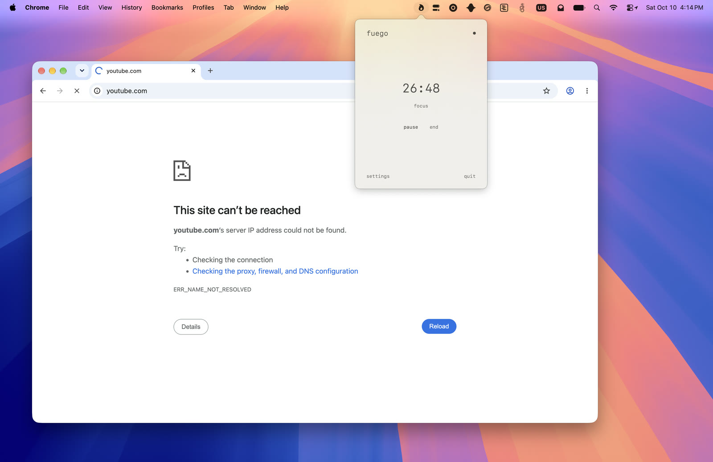

hi, this is fuego.
it's a mac app i made to stop myself from wandering off.
pick a time, hit begin, and the sites and apps that eat your day are gone until the timer runs out. in every browser, from the menu bar, no willpower required.
all in native swift.
open-source.
free. enjoy.

macOS 15.5 or later. you'll approve fuego's content filter once in system settings.
made by johannes naylor.